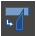

ツールボックス
GIMP のヘルプは、ツールボックスに並ぶツールアイコン群を、下記のように大きく 4 つのツール群に分類して説明しています。 下記のその他のツールを除くそれぞれのツール群には、共通の機能や共通のキー修飾があります。
Tip
何らかの操作をする際に、キー Ctrl と Shift と Alt のうち、ひとつ以上押下し続けることをキー修飾と呼びます。
- 選択ツール
- 描画ツール
- 変形ツール
- その他のツール
選択ツール
選択ツールは、範囲を選択するためのツールです。選択された範囲は白と黒の動く破線で囲まれ、切り取ったり塗りつぶしたりできるようになります。
Warning
選択ツールは現在選択されているレイヤーに対して機能します。選択ツールを使用する際には、レイヤーの選択状態を確認しましょう。
選択ツールには 7 種類あります。
- 矩形選択
- 楕円選択
- 自由選択
- 電脳はさみ
- 前景抽出選択
- ファジー選択
- 色域を選択
Tip
これらのツールは、メニューバー ツール > 選択ツール 配下の一覧からも選択できます。
描画ツール
描画ツールは、マウスポインタを使って描画したり、画像を加工したりするためのツールです。
描画ツールには 14 種類あります。
Warning
GIMP 2.10.32 に付随するヘルプでは、「13 種類の「描画ツール」があり」と記載されている箇所があります。
これは 2.10 から追加されたツール MyPaint ブラシで描画 が抜けているためです。
描画ツールのうち下記の 3 つは、ブラシで塗る基本的なツールのため、特にブラシツールと呼ばれます。
- ブラシで描画
- 鉛筆で描画
- エアブラシで描画
他に、マウスポインタで描画するツールには、以下の 2 つがあります。
- インクで描画
- MyPaint ブラシで描画
他には下記のようなツールがあります。
| アイコン | 名称 | 機能 |
|---|---|---|
| 塗りつぶし | レイヤー全体、あるいは選択範囲を塗りつぶす | |
| グラデーション | 選択開始点から終端点まで、グラデーションで塗りつぶす | |
 |
消しゴム | 描画を消して透過状態にする |
| スタンプで描画 | スタンプソースとして指定した画像やパターンでスタンプする | |
 |
遠近スタンプで描画 | 遠近感をつけてスタンプする |
| 修復ブラシ | 画像を修復する | |
| にじみ | にじませる | |
 |
ぼかし/シャープ | ぼかしやコントラストをつける |
 |
暗室 | 明るさを変化させる |
Warning
描画ツールも選択ツール同様に、現在選択されているレイヤーに対して機能します。描画ツールを使用する際には、レイヤーの選択状態を確認しましょう。
Tip
これらのツールは、メニューバー ツール > 描画ツール 配下の一覧からも選択できます。
変形ツール
変形ツールは、レイヤーや選択範囲やパスなどを対象として、移動や整列や変形などを行うためのツールです。
変形ツールには 13 種類あります。
Warning
ヘルプの更新が GIMP 本体の更新に追いついていないためか、 GIMP 2.10.32 に付随するヘルプでは、「変形ツールメニューには 8 つのツールが並んでいます」と記載されている箇所があります。
変形ツールには下記のようなものがあります。
| アイコン | 名称 | 機能 |
|---|---|---|
| 移動 | 対象を移動する | |
| 整列 | 対象を整列する | |
| 切り抜き | キャンバスを縮小して対象を切り抜く | |
|  | 統合変形 | レイヤーや選択範囲やパスを変形する |
| 回転 | レイヤーや選択範囲やパスを回転する | |
| 拡大・縮小 | レイヤーや選択範囲やパスを拡大または縮小する | |
| 剪断変形 | レイヤーや選択範囲やパスを剪断変形（長方形を平行四辺形に）する | |
| 鏡像反転 | レイヤーや選択範囲やパスを上下または左右に反転する | |
| 遠近法 | レイヤーや選択範囲やパスに遠近感を与える | |
| 3D 変換 | レイヤーや選択範囲やパスを三次元空間に置いて回転する | |
| ハンドル変形 | レイヤーや選択範囲やパスを小円のハンドルで変形する | |
| ワープ変形 | レイヤーや選択範囲やパスに対し、空間的な歪みを与える | |
| ケージ変形 | 変形したい範囲をケージで囲い、自由に変形する |
Tip
変形ツールの多くは、その対象をツールボックス下部の 変形対象 または 移動対象 で選択します。
Tip
これらのツールは、メニューバー ツール > 変形ツール 配下の一覧からも選択できます。
その他のツール
その他のツールは、選択ツール、描画ツール、変形ツールに含まれなかった残りのツール全てです。
- パス
- テキスト
- スポイト
- 定規
- ズーム